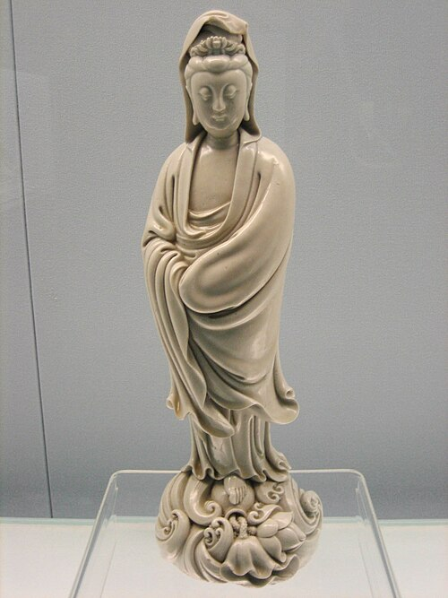

Estudando mais a fundo a Mitologia Chinesa
Por: Sofia Baur da Silva
Olá, bem vindos ao meu site, nele, iremos estudar algumas partes da história e mitologia chinesa.
fontes: https://pt.wikipedia.org/wiki/Mitologia_chinesa
Seus Deuses, costumes, história, influência na mídia, etc.
Por: Sofia Baur da Silva
Olá, bem vindos ao meu site, nele, iremos estudar algumas partes da história e mitologia chinesa.
fontes: https://pt.wikipedia.org/wiki/Mitologia_chinesa
Os historiadores supõem que a mitologia chinesa tem início por volta de 1100 a.C. Os mitos e lendas foram passados de forma oral durante aproximadamente mil anos antes de serem escritos os seus primeiros livros como o Shui Jing Zhu e o Shan Hai Jing. Outros mitos continuaram a ser passados através de tradições orais tais como o teatro e canções, antes de serem escritos em livros como o Fengshen Yanyi.
Após a era de Nu Kua e de Fu Xi (ou contemporaneamente em algumas versões), veio a Idade dos Três Augustos e dos Cinco Imperadores (三皇五帝), um grupo de legisladores lendários que governou entre 2850 a.C. e 2205 a.C., período anterior à Dinastia Xia.
Fu Xi (伏羲) — Companheiro de Nu Kua.
Shennong (神农) — Shennong, que significa "Fazendeiro Divino", ensinou a agricultura e a medicina aos antigos.
Huangdi (黄帝) — Huangdi, significando, e conhecido como, o "Imperador Amarelo", considerado o primeiro soberano da China.
Shaohao (少昊) — Líder dos Dongyi ou "Bárbaros do Leste", sua tumba piramidal está localizada na província de Shandong.
Zhuanxu (颛顼) — Neto do Imperador Amarelo.
Ku (帝喾) — Bisneto do Imperador Amarelo e sobrinho de Zhuanxu.
Yao (尧) — Filho de Ku. Seu irmão mais velho sucedeu Ku, mas abdicou ao sentir-se um legislador ineficaz.
Shun (舜) — Yao deixou sua posição para Shun em detrimento de seu próprio filho por causa da habilidade e moral de Shun.
Houve muito intercâmbio entre a mitologia chinesa, o confucionismo, o taoismo e o budismo, originando por isso as religiões tradicionais chinesas. Por um lado, elementos preexistentes da mitologia foram fundidos com essas religiões à medida que eles se desenvolviam (no caso do taoismo), ou eram assimilados pela cultura chinesa (caso do budismo). Por outro lado, elementos dos ensinamentos e das crenças destes sistemas foram incorporados à mitologia chinesa. Por exemplo, a crença taoista em um paraíso foi incorporada pela mitologia, como o lugar no qual os imortais e divindades residem. Entrementes, os mitos dos governantes benevolentes do passado, na forma dos Três Augustos e Cinco Imperadores, tornaram-se parte da filosofia política confucionista do primitivismo.
A religião tradicional chinesa, fruto de todo este intercâmbio e sincretismo, foi a religião oficial da China até à queda da monarquia (1911). Ela foi praticada na sua expressão máxima pelo Imperador chinês e centrava-se no culto a Shangdi ou Tian, que é o Deus supremo chinês:
Seu centro era o culto de Shang Ti (ou Tian), o ser supremo, o coordenador universal. Na circunferência, situava-se o culto e o império dos demónios. Entre o centro e a circunferência, ficavam, em círculos concêntricos, as diversas divindades, os sábios, os antepassados e os homens deificados. O acto supremo do culto nacional era o sacrifício imperial a Shang Ti. Só o Imperador, o grão sacerdote do mundo, o filho do Céu, podia oferecer esse sacrifício que remontava à maior antiguidade, e que permaneceu até à queda do Império.[1]
Os Três Puros são a trindade taoísta de deuses representando os princípios supremos.
O Imperador de Jade (玉皇大帝) — O Imperador de Jade é o governante supremo de tudo, contado entre as principais divindades taoístas.
Beiji Dadi (中天紫微北极大帝) — Governante das estrelas.
Tianhuang Dadi (勾陈上宫天皇大帝) — Governante dos deuses
Imperatriz da Terra (后土皇地祇)
Xi Wangmu ou Rainha Mãe do Oeste é a deusa que detém o segredo da vida eterna e a entrada para o paraíso. Originalmente era uma deusa feroz com dentes de tigre e que enviava pragas ao mundo, mas ao ser incorporada ao panteão taoísta, transformou-se em uma divindade benigna. Na mitologia chinesa popular, Xi Wangmu vive em um palácio de jade e, por isso, é considerada a patrona dos mineiros de jade. Ela também possui um pessegueiro que a cada três mil anos produz um pêssego que concede a imortalidade.
Deus taoísta do Norte, Pak Tai é um dos Cinco Imperadores que desde a Dinastia Han são associados a cada um dos pontos cardeais (Norte, Sul, Leste, Oeste e Centro) segundo a teoria dos Cinco Elementos (wu xing). Em Hong Kong e Macau, são considerados divindades do vento. Pak Tai é também o deus das águas, elemento associado ao norte como a cor preta. Seu animal totem é a tartaruga negra.
Xuan Nu foi a deusa que ajudou Huangdi (黃帝), o Imperador Amarelo, a subjugar Chi You (蚩尤) na guerra travada entre os dois. Depois de enfrentarem-se nove vezes em uma guerra cíclica sem que nenhum dos dois vencesse, o Imperador Amarelo retirou-se para o Monte Tai que ficou envolto em neblina durante três dias. Então apareceu Xuan Nu, que tinha cabeça de pessoa e corpo de ave, e aproximou-se do Imperador comunicando-lhe uma estratégia para vencer a guerra.
.avif)
Os Oito Imortais são uma crença taoísta descrita pela primeira vez na Dinastia Yuan. O poder de cada Imortal pode ser transferido para uma ferramenta que pode dar vida e destruir o mal. A maioria nasceu nas Dinastias Tang ou Sung. Eles não só são venerados pelos taoistas como são elementos da cultura chinesa. Vivem na Montanha Penglai.
Guan Yin (觀音) ou Kuan Yin (觀音菩薩) — Guan Yin é a deusa da compaixão e piedade.
Hotei (彌勒菩薩) — Hotei é uma divindade budista popular. Deus da alegria e fortuna.
Dizang (地藏菩薩) — Dizang é aquele que salva da morte.
Yanluo (閻羅) — Yanluo é o governante do Inferno (forma abreviada do sânscrito Yama Raja, 閻魔羅社).
Shi Tennô (四大天王) — Os Shi Tennô (Quatro Reis Celestes) são deuses guardiões budistas.

Erlang Shen é um deus chinês com um terceiro olho na testa que vê a verdade. É uma divindade beligerante e sempre empunha uma lança de três pontas e mantém seu fiel "Cão Celestial Sagrado" (啸天犬) ao seu lado, o qual ajuda-o a subjugar espíritos malignos. Sua origem varia, sendo por vezes tido como segundo filho do Rei Celestial do Norte, Vaishravana. E por vezes como sobrinho do Imperador de Jade (no conto A Jornada para o Oeste).
Lei Gong é o deus do trovão. Este deus começou sua existência como mortal, mas encontrou um pessegueiro que vinha dos céus. Quando ele comeu um de seus pêssegos, tornou-se um humano com asas e logo recebeu uma maça e um martelo que poderia criar trovões. E assim transformou-se no deus dos trovões.